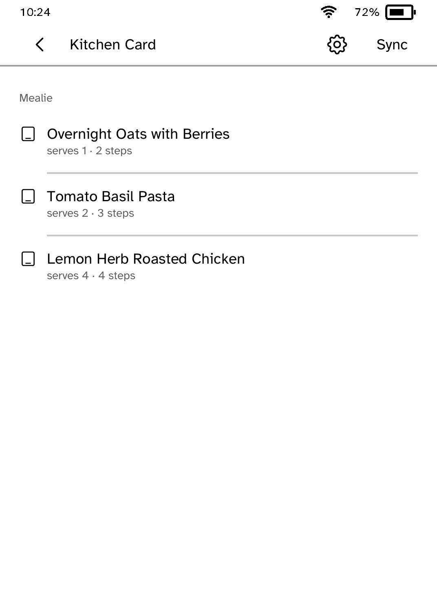
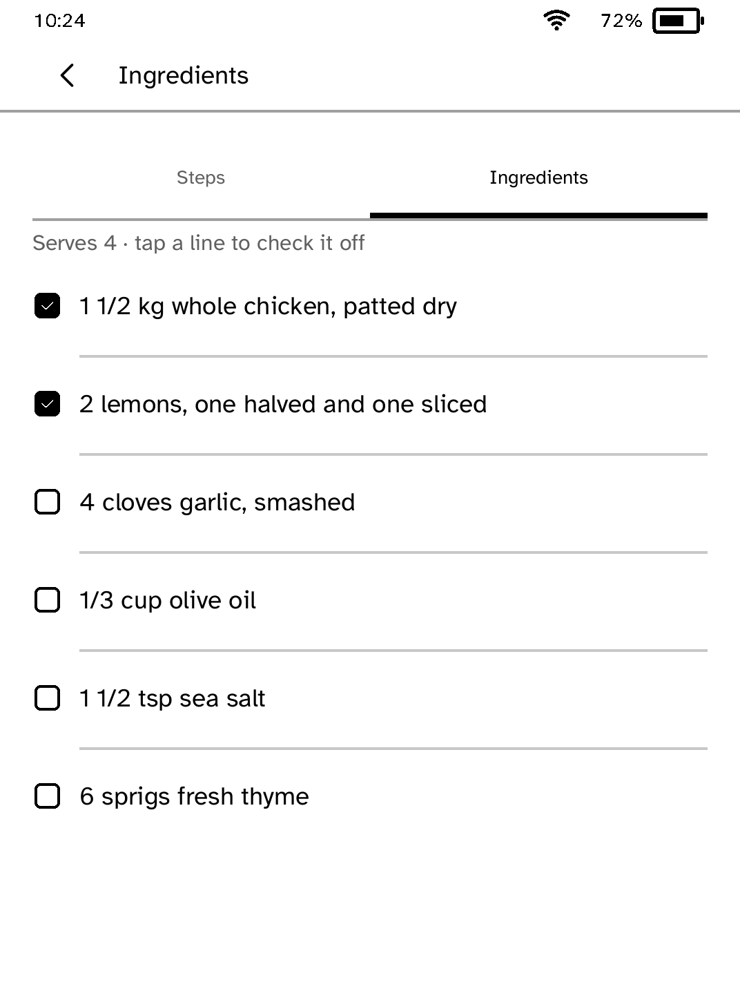
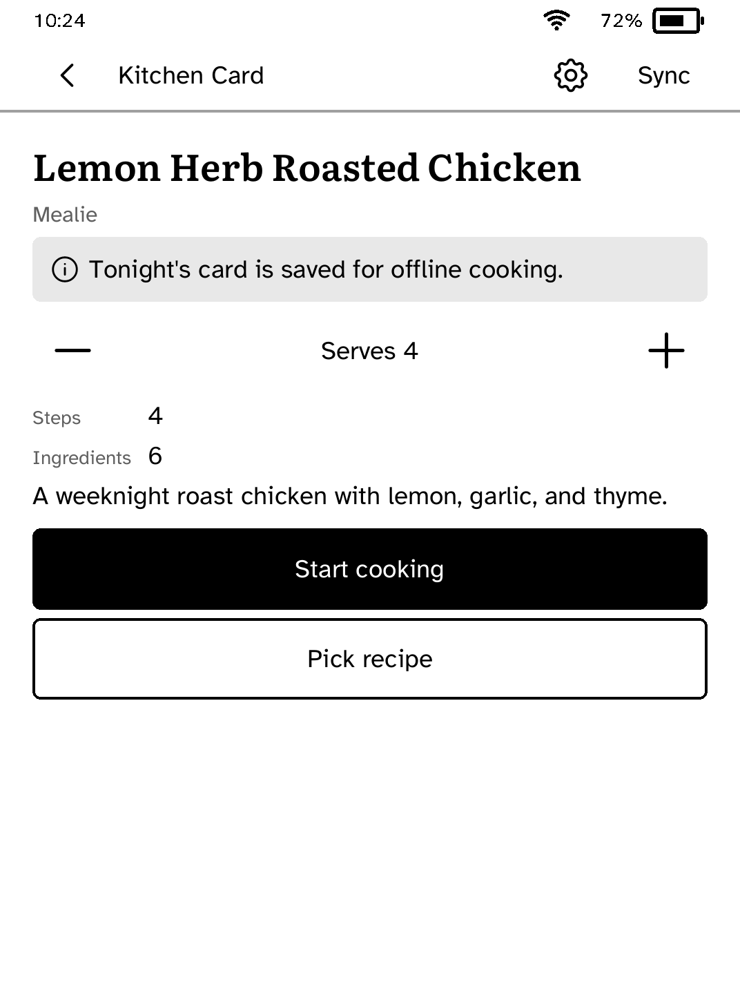

Kitchen Card
A read-only Mealie companion. Pick tonight's recipe and cook one large step at a time, with the screen kept on and the recipe available offline.
- Version
- 0.1.15
- Needs
- Cobalt 0.3.34 or newer
- May use
- The network, keeping the screen on, waking on a schedule





Before you install
- Set up the reader once over USB, if you have not already. Mealie must be reachable over HTTPS.
kobo setup - In Mealie, create an API token (your profile, API Tokens).
- Connect Kitchen Card from your computer. It asks for the address and the token, checks them, and sets the app up. Open Kitchen Card, or tap Check again.
kobo connect kitchencard
Commands need the kobo command on macOS, Linux or Windows WSL. This installs it ready-built, without touching the reader:
curl -fsSL https://bandarlabs.github.io/Cobalt/install.sh | sh -s -- --no-setup
New to Cobalt? Install it from your browser.
Plug your Kobo into this computer and install Cobalt in about a minute. After that, apps install over Wi-Fi.
Works in Chrome, Edge and Opera. Check your Kobo is supported.
Already have Cobalt? Link your Kobo.
On your Kobo, open App Store and tap Link a browser in the top bar, then Link a browser again. Scan the QR code, or enter the pairing code and verification key it shows.
Install on your Kobo
Your Kobo checks the app's signature before installing it.
New in 0.1.15
Cooking timers now count down and say when time is up, even after the reader sleeps. Start cooking carries on from the step you left, and a refused http address says why.
Want another Kobo app? Request it, suggest a feature or report a bug in r/CobaltForKobo.